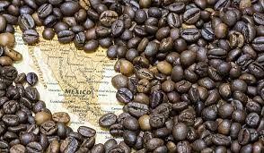
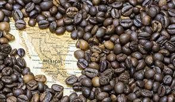

Nosotros
En BrewMex, no sólo servimos café; Creamos experiencias que cuentan una historia. Nuestro viaje comienza con la selección de los mejores granos de café, obtenidos directamente de las exuberantes plantaciones de café de Guerrero. Estos granos se someten a un meticuloso proceso de mezcla, donde los sabores se combinan armoniosamente para crear nuestras mezclas exclusivas. Este proceso no sólo garantiza un sabor excepcional sino que también honra la tradición centenaria del cultivo del café en México.
Historia y Valores
Fundada en 2024, Situada en el corazón de Guerrero, México, nuestra marca surge de una rica herencia cafetera, mezclando meticulosamente sabores que no sólo tentan las papilas gustativas sino que también satisfacen las diversas necesidades de los consumidores actuales preocupados por su salud. Lo que nos distingue es nuestro compromiso inquebrantable de elaborar mezclas que sean suaves para el estómago, calmantes para la ansiedad y propicias para un sueño reparador. Además, incorporamos adaptógenos naturales como la maca en nuestras mezclas, que pueden ayudar a mejorar la resistencia al estrés y promover el equilibrio general del cuerpo. Con un enfoque meticuloso en mejorar el bienestar general sin comprometer el sabor, cada taza de café BrewMex es un testimonio de nuestra dedicación a armonizar la indulgencia y el bienestar. Además, trabajamos en estrecha colaboración con las comunidades agrícolas locales para garantizar que nuestros granos de café se obtengan de manera sostenible
- Calidad de producción:Esto signi ca que todas nuestras semillas de café, sin excepción, pasarán por pruebas exhaustivas, donde se veri cará si el envase puede salir al mercado o no, y que el café producido sea 100% café. natural, sin ningún otro ingrediente químico que pueda cambiar el sabor, ya sea para darle un mejor sabor o para maximizar costos
- Calidad de diseño: Los empaques de Brewmex han pasado por un largo proceso, pues, evaluando el mercado del café y analizando la forma en que las empresas diseñan sus empaques, hemos observado que los empaques de café no son del todo cómodos, al momento de agarrarlo y que el espacio lo que ocupa en una alacena es muy grande, por eso Brewmex ha elaborado un envase que además de ser cómodo de sostener y que no ocupa tanto espacio en una alacena, ha creado un empaque que es ecológico. y que al ser desechado, no deje huella contaminante
- Calidad al cliente: El servicio que le ofrecerá Brewmex será un servicio de calidad, donde el cliente se sienta cómodo en la forma en que lo tratan los empleados de Brewmex, así como en Brewmex sabemos que la atención al cliente es fundamental para que el usuario compre un producto que es no necesariamente café, y que el trato que se brinde a los usuarios de Brewmex sea digno y amigable, donde no haya lugar a la discriminación o desigualdad.
 
